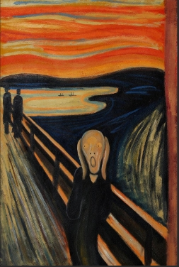
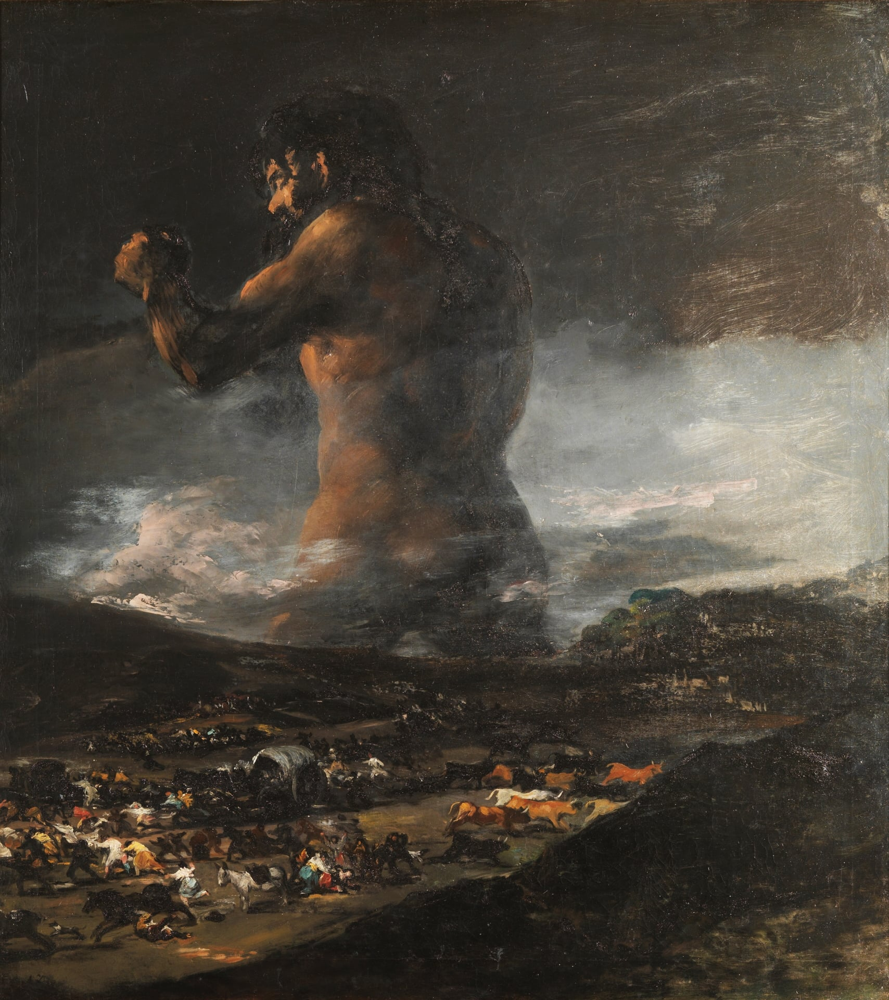
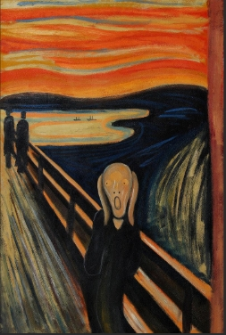
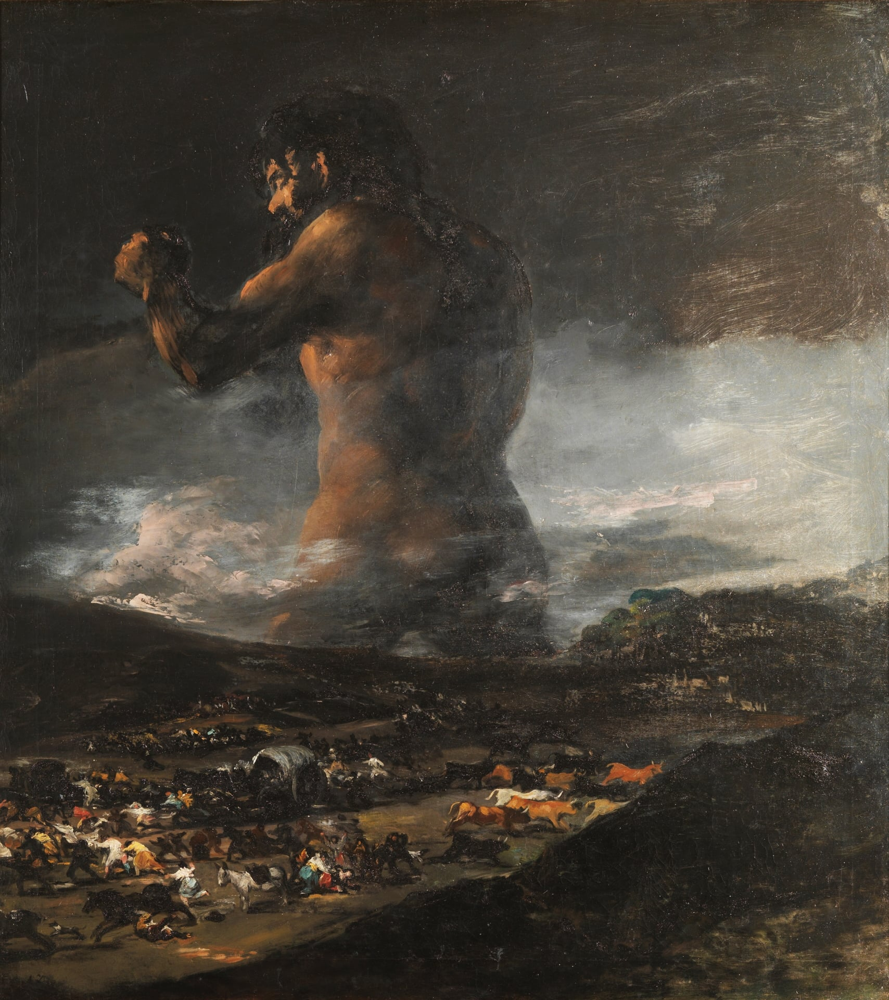
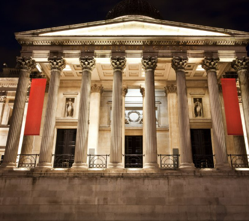
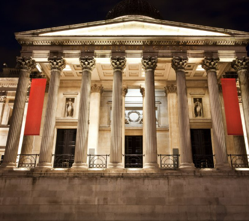

Musée
Un saut dans les siècles
Bienvenue dans notre musée virtuel du voyage à travers les siècles une expérience qui vous invite à explorer les grandes transformations de l’humanité. De l’éclat artistique de la Renaissance aux révolutions industrielles du XIXe siècle, en passant par les avancées fulgurantes en technologie, en médecine, en culture et en société, chaque époque a laissé son empreinte.
Visit Our Museum 



 
